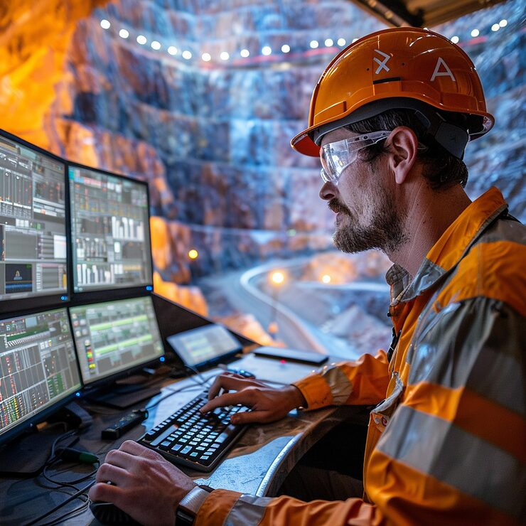
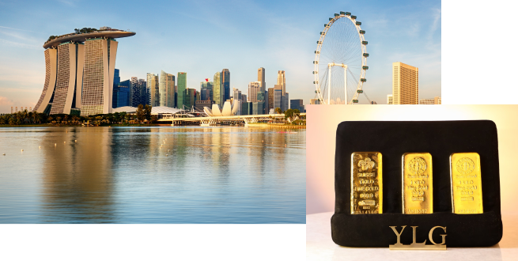

YLG Bullion International is a globally renowned gold trading company providing excellent services to our clients.
Founded as Yollin, a specialist precious metals company. A small team with a big vision — to build Thailand's most trusted name in bullion.

Rebranded from Yollin to YLG, and stepped into the gold market. A decade of metals expertise became the foundation for our ascent into Thailand's fastest-growing bullion business.

Launched YLG Bullion and Futures — Thailand's SEC-licensed gold futures broker. Expanded from physical bullion into derivatives, equities, and global commodities trading.

Opened our first international branch in Singapore — Asia's financial hub. A decisive step in our global expansion, bringing YLG's expertise to investors across Southeast Asia and beyond.

YLG Bullion and Futures was established in 2009 as a broker for gold futures trading. The company holds a Full License, covering a wide range of products such as Precious Metals (Gold Online Futures, Gold Futures), Equity (SET50 Futures, Single Stock Futures), as well as Currencies and Agricultures.
YLG is certified by the Securities and Exchange Commission (SEC) and is a member of the Gold Traders Association. It operates in compliance with the Derivatives Act B.E. 2546 (2003).
In 2022, YLG expanded its market reach to Global Markets, offering world-class products such as COMEX, NYMEX, and S&P Dow Jones. Investors can trade 24/7 through leading platforms like CQG and MT5. Additionally, YLG became the first in Thailand to provide investor trading via TradingView, reaffirming its leadership in the Futures market both domestically and globally.
YLG Bullion and Futures Co., Ltd. (License No. S1-0035-01) holds a license to provide services in exchange traded derivative products (futures and options) by The Securities and Exchange Commission of Thailand. Trading in financial markets involves substantial risk and may not be suitable for all investors as it can lead to losses exceeding the initial investment.
Restricted Regions: YLG Bullion and Futures Co., Ltd. does not provide services to residents of certain countries identified by the FATF as high-risk or non-cooperative jurisdictions.
YLG Bullion and Futures Co., Ltd.
Address:
653/19 (Between Narathiwat Soi 7–9)
Thung Maha Mek, Sathon
Bangkok 10120, Thailand